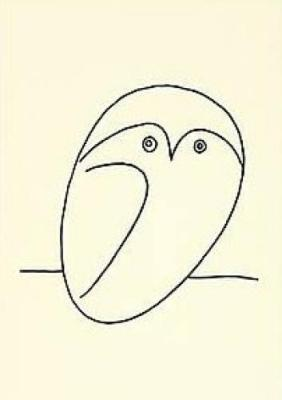
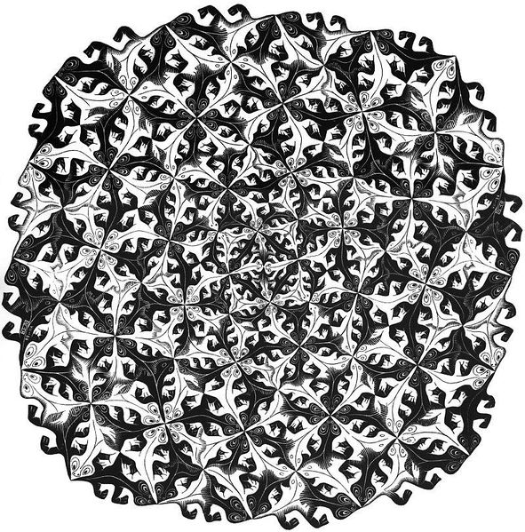

Esta es la traducción al español del artículo Haskell the hard way por Yann Esposito.
TL;DR*: Un corto y denso tutorial para aprender Haskell.
Asómbrate con Haskell
De verdad pienso que todos los desarrolladores deberían aprender Haskell. No creo que todos necesitan convertirse en ninjas de Haskell, pero deberían al menos descubrir que es lo que Haskell tiene para ofrecer. Aprender Haskell abre tu mente.
Los lenguajes comunes comparten los mismos fundamentos:
- variables
- loops
- punteros[^1]
- estructuras de datos, objetos y clases
Haskell es muy diferente. El lenguaje usa muchos conceptos que nunca he escuchado antes. Muchos de esos conceptos te ayudarán a convertirte en un mejor programador.
Pero aprender Haskell puede ser difícil. Lo fue para mi. En este artículo intentaré proveer lo que me faltó durante mi aprendizaje.
Este artículo será ciertamente difícil de seguir. Esto es intencional. No hay atajo alguno para aprender Haskell. Es difícil y retador. Pero creo que es algo bueno. Debido a que es difícil es que Haskell es interesante.
El método convencional de aprender Haskell es leer dos libros. Primero “Learn You a Haskell” y justo después “Real World Haskell”. También pienso que esta es la forma correcta. Pero aprender de que se trata Haskell, deberás leerlos en detalle.
En contraste, este artículo es un resumen muy breve y denso de los principales aspectos de Haskell. También he agregado información que a mi me faltó mientras aprendía Haskell.
El artículo contiene cinco partes:
- Introducción: un corto ejemplo para mostrar que Haskell puede ser amigable.
- Haskell básico: sintaxis de Haskell, y algunas nociones esenciales.
- Parte muy difícil:
- Estilo funcional; un ejemplo progresivo, desde estilo imperativo al
- funcional
- Tipos; tipos y el ejemplo estándar del árbol binario
- Estructuras infinitas; manipulando un árbol binario infinito!
- Parte infernalmente difícil:
- Lidiar con IO; un ejemplo reducido
- El truco de IO explicado; el detalle ocultó que yo no tuve para entender IO
- Monads; increíble como podemos generalizar
- Apéndice:
- Más sobre arboles infinitos; una discusión más matemática sobre arboles
- infinitos
.hs(Haskell), y por eso en los ejemplos se escribre la ejecución de los mismos como$ runhaskell algo.hspero el nombre puede ser cualquiera.
Introducción
Instalación

- La plataforma de Haskell es la forma estándar de instalar Haskell.
Herramientas:
ghc: Compilador similar a gcc para C. ghci: Haskell interactivo (REPL) runhaskell: Ejecutar un programa sin compilarlo. Conveniente pero muy lento comparado a programas compilados
No tengas miedo
Muchos libros/artículos sobre Haskell empiezan por introducir alguna formula esotérica (quick sort, Fibonacci, etc…). Yo lo haré justamente al revés. Al principio no mostraré ningún super poder de Haskell. Empezaré por las similaridades entre Haskell y otros lenguajes de programación. Saltemos al “Hola Mundo” obligatorio.
Para ejecutarlo, puedes guardar el código en un fichero hola.hs y:
$ runhaskell ./hola.hs
Hola Mundo!Ahora, un programa que pregunte tu nombre y responda “Hola” usando el nombre ingresado:
Primero, comparemos esto con programas similares en algunos lenguajes imperativos:
// In C
#include <stdio.h>
int main (int argc, char **argv) {
char name[666]; // <- An Evil Number!
// What if my name is more than 665 character long?
printf("What is your name?\n");
scanf("%s", name);
printf("Hello %s!\n", name);
return 0;
}La estructura es la misma, pero hay diferencias en la sintaxis. La parte principal de este tutorial será dedicada a explicar por qué.
En Haskell hay una función main y todo elemento tiene un tipo. El tipo de main es IO (). Esto significa que main causará efectos secundarios.
Solamente recuerda que Haskell puede lucir mucho como los lenguajes imperativos populares.
Haskell básico

Antes de continuar debes ser advertido sobre algunas propiedades esenciales de Haskell.
Funcional
Haskell es un lenguaje funcional. Si tienes experiencia con lenguajes imperativos, deberás aprender muchas cosas nuevas. Con suerte muchos de estos nuevos conceptos te ayudarán a programas incluso en lenguajes imperativos.
Tipado estático inteligente
En lugar de meterse en tu camino como en C, C++ o Java, el sistema de tipos está aquí para ayudarte.
Pureza
Generalmente tus funciones no modificarán nada en el mundo exterior. Esto significa que no pueden modificar el valor de una variable, no pueden obtener entrada del usuario, no pueden escribir en la pantalla, no pueden lanzar un misil. Por otro lado, el paralelismo será muy fácil de lograr. Haskell hace deja claro donde los efectos secundarios pueden ocurrir y donde el código es puro. También, será mucho más fácil razonar sobre el programa. La mayoría de los errores serán prevenidos en las partes puras del programa.
Además, las funciones puras siguen una ley fundamental en Haskell:
Aplicar una funcion con los mismos parámetros siempre producirá los
mismos valores.Perezoso (laziness)
Laziness por defecto es un diseño de lenguaje muy poco común. Por defecto, Haskell evalúa algo solamente cuando lo necesita. En consecuencia, provee una forma muy elegante de manipular estructuras infinitas, por ejemplo.
Una ultima advertencia sobre como deberías leer código Haskell. Para mi, es como leer artículos científicos. Algunas partes son muy claras, pero cuando vez una formula, enfócate y lee más despacio. También, mientras se lee código Haskell, en realidad no importa mucho si no se comprenden los detalles de la sintaxis. Si encuentras algo como >>=, <$>, <- o cualquier símbolo extraño, solamente ignóralos y continua el flujo del código.
Declaración de funciones
Seguramente estarás acostumbrado a funciones como:
En C:
En JavaScript:
En Python:
En Ruby:
En Scheme:
Finalmente, en Haskell es:
Muy limpio. No paréntesis, no def.
No olvides, Haskell usa funciones y tipos un montón. Por lo que es muy fácil definirlos. La sintaxis fuer particularmente pensada para estos elementos.
Un ejemplo de tipo
Aunque no es obligatorio, la información sobre los tipos para las funciones usualmente se hace explicita. No es obligatorio por que el compilador es lo bastante inteligente para descubrirlo por ti. Es una buena idea hacerlo de todas formas por que indica la intensión y facilita la comprensión.
Juguemos un poco. Declaramos el tipo usando ::
$ runhaskell 20_very_basic.lhs
13Ahora intenta
Deberías obtener este error:
21_very_basic.lhs:6:23:
No instance for (Fractional Int)
arising from the literal `4.2'
Possible fix: add an instance declaration for (Fractional Int)
In the second argument of `f', namely `4.2'
In the first argument of `print', namely `(f 2.3 4.2)'
In the expression: print (f 2.3 4.2)El problema: 4.2 no es un Int.
La solución: No declarar un tipo para f por el momento y dejar a Haskell inferir el tipo más general por nosotros:
Funciona! Afortunadamente, no tenemos que declarar una nueva función para cada tipo. Por ejemplo, in C, deberíamos declarar una función para int, para float para long, para double, etc…
Pero, que tipo deberíamos declarar? Para descubrir el tipo que Haskell a usado por nosotros ejecutaremos ghci:
% ghci
GHCi, version 7.0.4: http://www.haskell.org/ghc/ :? for help
Loading package ghc-prim ... linking ... done.
Loading package integer-gmp ... linking ... done.
Loading package base ... linking ... done.
Loading package ffi-1.0 ... linking ... done.
Prelude>Y escribimos:
let f x y = x*x + y*y
Prelude>
:type f
f :: Num a => a -> a -> aUh? Que es ese tipo extraño?
Primero, enfoquémonos en la parte de la derecha a -> a -> a. Para comprenderlo, solo mira una lista de ejemplos progresivos:
| El tipo | Su significado |
|---|---|
| Int | El tipo Int |
| Int -> Int | El tipo de función de Int a Int |
| Float -> Int | El tipo de función de Float a Int |
| a -> Int | El tipo de función de cualquier tipo a Int |
| a -> a | El tipo de función de cualquier tipo al mismo tipo a |
| a -> a -> a | El tipo de función de dos argumentos de cualquier tipo a al |
| mismo tipo a |
En el tipo a -> a -> a, la letra a es una variable de tipo. Significa que f es una función con dos argumentos y esos dos argumentos y el resultado tienen que ser del mismo tipo, La variable de tipo a puede ser cualquier tipo. Por ejemplo Int, Integer, Float…
Así que en lugar de forzar un tipo en particular como en C y tener que declarar una función para int, long, float, double, etc., podemos declarar una sola función como en un lenguaje de tipado dinámico.
Esto es algunas veces llamado polimorfismo paramétrico.
Generalmente a puede ser cualquier tipo, por ejemplo un String a un Int, pero también puede ser tipos más complejos, como Trees, otras funciones, etc. Pero en este caso nuestro tipo tiene como prefijo Num a =>.
Num es una clase de tipo (type class). Una clase de tipo puede ser vista como un conjunto de tipos. Num contiene solamente los tipos que pueden comportarse como números. Más concretamente, Num es una clase que contiene tipos que implementan una lista especifica de funciones, en particular (+) y (*).
Las clases de tipos son un aspecto muy potente del lenguaje. Podemos hacer cosas increíbles con esto. Más sobre el tema luego.
Finalmente, Num a => a -> a -> a significa:
Sea a un tipo que pertenece a la clase de tipo Num. Esto es una función de tipo a a (a -> a).
Si, extraño. De hecho, en Haskell ninguna función tiene dos argumentos. En lugar de eso todas las funciones pueden tener un solo argumento. Pero notaremos que tomar dos argumentos es equivalente a tomar un argumento y retornar una función que toma el segundo argumento como parámetro.
Más concretamente f 3 4 es equivalente a (f 3) 4. Nótese que f 3 es una función:
Existe otra notación para funciones. La notación lambda nos permite crear funciones sin asignarles un nombre. Llamamos a estas funciones anónimas. Podemos escribirlas como:
El \\ es usado por que se parece a λ (símbolo lambda) y es ASCII.
Si no estás acostumbrado a la programación funcional tu cerebro debería estar empezando a calentarse. Es tiempo de hacer una aplicación real.
Pero antes de eso, deberíamos verificar que el sistema de tipos funciona según lo esperado.
Funciona, porque, 3 es una representación valida para números fraccionarios como Float así como para Integer. Como 2.4 es una numero fraccionario, 3 es interpretado también como un numero fraccionario.
Si forzamos nuestra función a trabajar con tipos diferentes, fallará.
f :: Num a => a -> a -> a
f x y = x*x + y*y
x :: Int
x = 3
y :: Float
y = 2.4
-- No funcionará por que el tipo x ≠ tipo y
main = print (f x y)El compilador se queja. Los dos parámetros deben ser del mismo tipo.
Si piensas que esto es una mala idea, y que el compilador debería hacer la transformación de un tipo al otro por ti, deberías ver este fantástico (y divertido) vídeo: WAT
Haskell esencial
Sugiero que leas con ligereza esta parte. Mírala como una referencia. Haskell tiene un montón de características. Regresa aquí cada vez que la notación te parezca extraña.
Uso el símbolo ⇔ para indicar que dos expresiones son equivalentes. Es una meta notación, ⇔ no existe en Haskell. También usaré ⇒ para indicar cual es el valor de retorno de una expresión.
Notaciones
Aritmética
3 + 2 * 6 / 3 ⇔ 3 + ((2*6)/3)Lógica
True || False ⇒ True
True && False ⇒ False
True == False ⇒ False
True /= False ⇒ True (/=) es el operador diferenciaPotencias
x^n para un n entero (Int o Integer)
x**y para cualquier tipo de numero y (como un Float)Integer no tiene ningún limite además de la capacidad de tu máquina.
4^103
102844034832575377634685573909834406561420991602098741459288064Si! También hay números racionales! Pero hay que importar el modulo Data.Ratio:
$ ghci
....
Prelude> :m Data.Ratio
Data.Ratio> (11 % 15) * (5 % 3)
11 % 9Listas
[] ⇔ Lista vacia
[1,2,3] ⇔ Lista de enteros
["foo","bar","baz"] ⇔ Lista de cadenas
1:[2,3] ⇔ [1,2,3], (:) anteponer un elemento
1:2:[] ⇔ [1,2]
[1,2] ++ [3,4] ⇔ [1,2,3,4], (++) concatenar
[1,2,3] ++ ["foo"] ⇔ ERROR String ≠ Integral
[1..4] ⇔ [1,2,3,4]
[1,3..10] ⇔ [1,3,5,7,9]
[2,3,5,7,11..100] ⇔ ERROR! No soy tan inteligente!
[10,9..1] ⇔ [10,9,8,7,6,5,4,3,2,1]Cadenas
En Haskell las cadenas son listas de Char.
'a' :: Char
"a" :: [Char]
"" ⇔ []
"ab" ⇔ ['a','b'] ⇔ 'a':"b" ⇔ 'a':['b'] ⇔ 'a':'b':[]
"abc" ⇔ "ab"++"c"
En código real no se debería usar una lista de `Char` para
representar texto. Se debería usar `Data.Text`. Si quieres
representar un flujo de caracteres ASCII, deberías usar
`Data.ByteString`.Tuplas
El tipo de una tupla es (a,b). Los elementos dentro de una tupla pueden tener diferentes tipos.
-- Todas estas tuplas son validas
(2,"foo")
(3,'a',[2,3])
((2,"a"),"c",3)
fst (x,y) ⇒ x
snd (x,y) ⇒ y
fst (x,y,z) ⇒ ERROR: fst :: (a,b) -> a
snd (x,y,z) ⇒ ERROR: snd :: (a,b) -> bControlar los paréntesis
Para remover algunos paréntesis se pueden usar dos funciones: ($) y (.).
-- Por defecto:
f g h x ⇔ (((f g) h) x)
-- el $ reemplaza los paréntessis desde el $
-- hasta el final de la expresión
f g $ h x ⇔ f g (h x) ⇔ (f g) (h x)
f $ g h x ⇔ f (g h x) ⇔ f ((g h) x)
f $ g $ h x ⇔ f (g (h x))
-- (.) composición de funciones
(f . g) x ⇔ f (g x)
(f . g . h) x ⇔ f (g (h x))Notaciones útiles para funciones
Solo un recordatorio:
x :: Int ⇔ x es de tipo Int
x :: a ⇔ x puede ser de cualquier tipo
x :: Num a => a ⇔ x puede ser cualquier tipo a
que pertenezca a la class de typo Num
f :: a -> b ⇔ f es una función de a hacia b
f :: a -> b -> c ⇔ f es una función de a hacia (b→c)
f :: (a -> b) -> c ⇔ f es una función de (a→b) hacia cRecuerda que definir el tipo de una función antes de su declaración no es obligatorio. Haskell infiere el tipo más general por ti. Pero es considerado una buena practica hacerlo de todos modos.
Notación infijo
Nótese que ^ usa notación infijo. Para cada operador infijo hay una notación prefijo asociada. Solo debe ponerse entre paréntesis.
Podemos remover x en el lado izquierdo y derecho! Eso se llama reducción η.
Nótese que podemos declarar funciones con un ' en su nombre:
square ⇔ square' ⇔ square'' ⇔ square'''Tests
Nota: el if .. then .. else en Haskell es como el algo ? algo : algo en C. No puedes olvidar el else
Otra versión equivalente:
Advertencia: la indentación es importante en Haskell. Como en
Python, una mala indentación pueden dañar el código!Parte difícil
La parte difícil puede empezar ahora.
Estilo funcional
En esta sección, proporcionaré un ejemplo corto de la impresionante habilidad para refactorizar de Haskell. Seleccionaremos un problema y los resolveremos en la forma imperativa estándar. Luego desarrollaremos el código. Al final el resultado será más elegante y más sencillo de adaptar.
Solucionemos el siguiente problema:
Dada una lista de enteros, retornar la suma de numeros pares en la lita.
ejemplo: `[1,2,3,4,5] ⇒ 2 + 4 ⇒ 6`Para mostrar las diferencias entre los enfoques funcional e imperativo, Empezaré con la solución imperativa (en JavaScript):
function evenSum(list) {
var result = 0;
for (var i=0; i< list.length ; i++) {
if (list[i] % 2 ==0) {
result += list[i];
}
}
return result;
}En Haskell, en contraste, no tenemos variables ni un loop for. Una solución para lograr el mismo resultado sin loops es usando recursión.
Nota: La recursión es generalmente persivida como lenta en los lengajes
imperativos. Pero generalmente no es el caso en la programación funcional.
La mayor parte del tiempo Haskell manejará funciones recursivas de forma
eficiente.Aquí esta la versión en C de la función recursiva. Por simplicidad asumí que la lista de int termina con el primer valor de 0.
int evenSum(int *list) {
return accumSum(0,list);
}
int accumSum(int n, int *list) {
int x;
int *xs;
if (*list == 0) { // si la lista está vacia
return n;
} else {
x = list[0]; // x es el primer elemento de la lista
xs = list+1; // xs es la lista sin el elemento x
if ( 0 == (x%2) ) { // si x es par
return accumSum(n+x, xs);
} else {
return accumSum(n, xs);
}
}
}Mantén este código en mente. Lo vamos a traducir a Haskell. Sin embargo, vamos a necesitar primero introducir tres simples pero útiles funciones que usaremos:
even verifica si un numero es par.
head retorna el primer elemento de la lista:
tail retorna todos los elementos de la lista, excepto el primero:
Nótese que para cualquier lista no vacía l, l ⇔ (head l):(tail l)
La primera solución en Haskell. La función evenSum retorna la suma de todos los números pares en la lista:
-- Version 1
evenSum :: [Integer] -> Integer
evenSum l = accumSum 0 l
accumSum n l = if l == []
then n
else let x = head l
xs = tail l
in if even x
then accumSum (n+x) xs
else accumSum n xsPara probar la función puedes usar ghci:
% ghci
GHCi, version 7.0.3: http://www.haskell.org/ghc/ :? for help
Loading package ghc-prim ... linking ... done.
Loading package integer-gmp ... linking ... done.
Loading package base ... linking ... done.
Prelude> :load 11_Functions.lhs
[1 of 1] Compiling Main ( 11_Functions.lhs, interpreted )
Ok, modules loaded: Main.
*Main> evenSum [1..5]
6Aquí un ejemplo de la ejecución[^2]:
*Main> evenSum [1..5]
accumSum 0 [1,2,3,4,5]
1 is odd
accumSum 0 [2,3,4,5]
2 is even
accumSum (0+2) [3,4,5]
3 is odd
accumSum (0+2) [4,5]
2 is even
accumSum (0+2+4) [5]
5 is odd
accumSum (0+2+4) []
l == []
0+2+4
0+6
6Viniendo de un lenguaje imperativo todo debería parecer correcto. De hecho, muchas cosas se pueden mejorar. Primero, podemos generalizar el tipo.
Luego, podemos usar sub-funciones usando where o let. De esta forma la función accumSum no llenará el espacio de nombres de nuestro modulo.
-- Version 2
evenSum :: Integral a => [a] -> a
evenSum l = accumSum 0 l
where accumSum n l =
if l == []
then n
else let x = head l
xs = tail l
in if even x
then accumSum (n+x) xs
else accumSum n xsLuego podemos usar pattern matching.
-- Version 3
evenSum l = accumSum 0 l
where
accumSum n [] = n
accumSum n (x:xs) =
if even x
then accumSum (n+x) xs
else accumSum n xsQué es pattern matching? Usar valores en lugar de nombres de parámetro generales[^3].
En lugar de decir: foo l = if l == [] then <x> else <y> simplemente se declara:
Pero el pattern matching va más lejos. También es capaz de inspeccionar el elemento interno de un valor complejo. Podemos reemplazar
Con
Esto es una característica muy útil. Hace nuestro código más conciso y fácil de leer.
En Haskell se puede simplificar las definiciones de las funciones usando reducción η. Por ejemplo, en lugar de escribir:
Se puede escribir
Usamos este método para remover el l:
-- Version 4
evenSum :: Integral a => [a] -> a
evenSum = accumSum 0
where
accumSum n [] = n
accumSum n (x:xs) =
if even x
then accumSum (n+x) xs
else accumSum n xsFunciones de orden superior

Para mejorarlo aún más podemos usar funciones de orden superior. Qué son esas bestias? Las funciones de orden superior son funciones que toman funciones como parámetros.
Aquí algunos ejemplos:
filter :: (a -> Bool) -> [a] -> [a]
map :: (a -> b) -> [a] -> [b]
foldl :: (a -> b -> a) -> a -> [b] -> aProcedamos con pequeños pasos.
-- Version 5
evenSum l = mysum 0 (filter even l)
where
mysum n [] = n
mysum n (x:xs) = mysum (n+x) xsDonde
La función filter toma una función de tipo (a -> Bool) y una lista de tipo [a]. Retorna una lista que contiene solamente los elementos para los cuales la función retornó true.
El siguiente paso es usar otra técnica para lograr el mismo resultado que un loop. Usaremos la función foldl para acumular los valores mientras recorremos la lista. La función foldl captura un patrón común:
myfunc list = foo initialValue list
foo accumulated [] = accumulated
foo tmpValue (x:xs) = foo (bar tmpValue x) xsQue se puede reemplazar con:
Si realmente quieres saber como funciona la magia, aquí está la definición de foldl:
Pero como Haskell es perezoso, no evalúa (f z x) y simplemente lo empuja en la pila. Por eso generalmente usamos foldl' en lugar de foldl; foldl' es una versión estricta de foldl. Si no comprendes que significa perezoso o estricto, no te preocupes, solo sigue el código como si fold y foldl' fueran idénticos.
Ahora la nueva versión de evenSum será:
-- Version 6
-- foldl' isn't accessible by default
-- we need to import it from the module Data.List
import Data.List
evenSum l = foldl' mysum 0 (filter even l)
where mysum acc value = acc + valueTambién podemos simplificar eso usando notación lambda. Así no tendremos que crear un nombre temporal mysum.
-- Version 7
-- Generally it is considered a good practice
-- to import only the necessary function(s)
import Data.List (foldl')
evenSum l = foldl' (\x y -> x+y) 0 (filter even l)Y por supuesto, notamos que
(\x y -> x+y) ⇔ (+)
Finalmente
-- Version 8
import Data.List (foldl')
evenSum :: Integral a => [a] -> a
evenSum l = foldl' (+) 0 (filter even l)foldl' no es la función más sencilla de comprender. Si no estas acostumbrado, deberías estudiarlo un poco.
Para ayudar a comprender que está sucediendo aquí, miremos la evaluación paso por paso:
evenSum [1,2,3,4]
⇒ foldl' (+) 0 (filter even [1,2,3,4])
⇒ foldl' (+) 0 [2,4]
⇒ foldl' (+) (0+2) [4]
⇒ foldl' (+) 2 [4]
⇒ foldl' (+) (2+4) []
⇒ foldl' (+) 6 []
⇒ 6Otra función de orden superior útil es (.). La función (.) corresponde a la composición matemática de funciones.
(f . g . h) x ⇔ f ( g (h x))
Podemos tomar ventaja de este operador para hacer una reducción η en nuestra función:
-- Version 9
import Data.List (foldl')
evenSum :: Integral a => [a] -> a
evenSum = (foldl' (+) 0) . (filter even)También, podemos renombrar algunas partes para hacerlo más claro:
-- Version 10
import Data.List (foldl')
sum' :: (Num a) => [a] -> a
sum' = foldl' (+) 0
evenSum :: Integral a => [a] -> a
evenSum = sum' . (filter even)Es tiempo de hablar sobre la dirección hacia la cual se ha movido nuestro código mientras introducimos más de la forma funcional. Qué hemos ganado al usar funciones de orden superior?
Al principio podrías pensar que la principal diferencia es la brevedad. Pero en realidad tiene más que ver con la forma en la que se piensa. Supongamos que se quiere modificar un poco la función, por ejemplo, para obtener la suma de los cuadrados de los elementos pares de la lista.
Actualizar la versión 10 es muy fácil:
Solamente agregamos otra “función de transformación”.
La función map simplemente aplica una función sobre todos los elementos de una lista.
No tuvimos que modificar nada dentro de la definición de la función. Esto hace el código más modular. Pero también permite pensar en la función de forma más matemática. También se puede usar la función intercambiablemente con otras, según se necesite. Esto es, se puede hacer compose, map, fold, filter usando la nueva función.
Modificar la versión 1 se deja como ejercicio para el lector ☺.
Si piensas que hemos llegado al final de la generalización, entonces enterate que estas muy equivocado. Por ejemplo, hay una forma de usar esta fucnion no solo en listas, sino ademas sobre cualquier tipo recursivo. Si quieres saber como, recomiendo que leas este artículo
Este ejemplo debería demostrar cuan genial es la programación funcional. Desafortunadamente, usar programación funcional pura no es adecuado para todos los usos. O al menos un lenguaje que lo permite no se a logrado aún.
Uno de los mayores poderes de Haskell es la habilidad de crear DSLs (Lenguaje de dominio específico) haciendo sencillo cambiar el paradigma de programación.
De hecho, Haskell también es grandioso cuando se quiere escribir en estilo imperativo. Comprender esto fue muy difícil para mi cuando aprendía Haskell. Gran parte del esfuerzo se va intentando explicar la superioridad del enfoque funcional. Luego cuando empiezas a usar estilo imperativo con Haskell, puede ser difícil entender dónde y cómo usarlo.
Pero antes de hablar sobre este super poder de Haskell, debemos hablar sobre otro aspecto esencial de Haskell: Tipos.
Tipos
TL;DR*:
type Nombre = OtroTipoes solamente un alias y no hay ninguna diferencia entreNombreyOtroTipo.data Nombre = NombreConstructor OtroTipotiene diferenciadatapuede construir estructuras que pueden ser recursivasderivinges mágico y crea funciones por ti
En Haskell, los tipos son fuertes y estáticos.
Por qué es importante? Permitirá en gran medida evitar errores. En Haskell, la mayoría de los errores se capturan durante la compilación del programa. Y la razón principal es debido a la inferencia de tipos durante la compilación. La inferencia de tipos hace sencillo detectar donde se usó el parámetro incorrecto en el lugar incorrecto, por ejemplo.
Inferencia de tipos
El tipado estático es generalmente esencial para la ejecución veloz. Pero la mayoría de lenguajes estáticamente tipado son malos generalizando conceptos. La ventaja de Haskell es su capacidad para inferir tipos.
Aquí un ejemplo simple, la función square en Haskell:
Esta función puede elevar al cuadrado cualquier tipo Numérico. Se puede pasar a square un Int, un Integer, un Float, un Fractional e incluso un Complex. Por ejemplo:
% ghci
GHCi, version 7.0.4:
...
Prelude> let square x = x*x
Prelude> square 2
4
Prelude> square 2.1
4.41
Prelude> -- load the Data.Complex module
Prelude> :m Data.Complex
Prelude Data.Complex> square (2 :+ 1)
3.0 :+ 4.0x :+ y es la notación para el complejo (x + iy).
Ahora compáralo con la cantidad de código necesario en C:
int int_square(int x) { return x*x; }
float float_square(float x) {return x*x; }
complex complex_square (complex z) {
complex tmp;
tmp.real = z.real * z.real - z.img * z.img;
tmp.img = 2 * z.img * z.real;
}
complex x,y;
y = complex_square(x);Para cada tipo, se necesita escribir una nueva función. La única forma de solucionar esto es usando algún truco de meta-programación, por ejemplo usando el pre-procesador. En C++ hay una mejor forma usando templates:
#include <iostream>
#include <complex>
using namespace std;
template<typename T>
T square(T x)
{
return x*x;
}
int main() {
// int
int sqr_of_five = square(5);
cout << sqr_of_five << endl;
// double
cout << (double)square(5.3) << endl;
// complex
cout << square( complex<double>(5,3) )
<< endl;
return 0;
}C++ lo hace mucho mejor que C en este aspecto. Pero para funciones más complejas la sintaxis puede ser difícil de entender: Mira este artículo por ejemplo.
En C++ se debe declarar que la función puede trabajar con distintos tipos. En Haskell, es lo opuesto. La función será lo más general posible por defecto.
La inferencia de tipos le da a Haskell la sensación de libertad de los lenguajes de tipado dinámico. Pero a diferencia de estos, la mayoría de los errores se encuentra antes de la ejecución. Generalmente, en Haskell:
“Si compila entonces hace lo que quieres que haga”
Construcción de tipos
Es posible construir tipos propios. Primero, se pueden usar alias o sinónimos de tipos.
type Name = String
type Color = String
showInfos :: Name -> Color -> String
showInfos name color = "Name: " ++ name
++ ", Color: " ++ color
name :: Name
name = "Robin"
color :: Color
color = "Blue"
main = putStrLn $ showInfos name colorPero esto no te protege mucho. Intenta intercambiar los dos parámetros de showInfos y ejecuta el programa:
putStrLn $ showInfos color nameSe compilará y ejecutará. De hecho se pueden reemplazar Name, Color y String con cualquier cosa. El compilador los tratará como si fueran idénticos.
Otro método es crear tus propios tipos usando la palabra reservada data.
data Name = NameConstr String
data Color = ColorConstr String
showInfos :: Name -> Color -> String
showInfos (NameConstr name) (ColorConstr color) =
"Name: " ++ name ++ ", Color: " ++ color
name = NameConstr "Robin"
color = ColorConstr "Blue"
main = putStrLn $ showInfos name colorAhora si intercambias los parámetros de showInfos, el compilador se queja! De forma que nunca más podrás cometer un error de ese tipo y el único precio es ser un poco más explicito.
También nota que los constructores son funciones:
La sintaxis de data es principalmente:
Generalmente se usa el mismo nombre para el DataTypeName y para el DataTypeConstructor.
Ejemplo:
También se puede usar sintaxis record:
data DataTypeName = DataConstructor {
field1 :: [type of field1]
, field2 :: [type of field2]
...
, fieldn :: [type of fieldn] }Y hay varios accesores disponibles. Además se puede usar otro orden cuando se asignen valores.
Ejemplo:
data Complex a = Num a => Complex { real :: a, img :: a}
c = Complex 1.0 2.0
z = Complex { real = 3, img = 4 }
real c ⇒ 1.0
img z ⇒ 4Tipos recursivos
Ya nos hemos topado con un tipo recursivo: listas. Se pueden re-crear listas, pero con una sintaxis más explicita:
Si prefieres usar una sintaxis más simple, se puede usar un nombre infijo para los constructores.
El numero luego de infixr le da la precedencia.
Si quieres poder imprimir por pantalla (Show), leer (Read), probar igualdad (Eq) y comparar (Ord) con tu nueva estructura de datos puedes pedirle a Haskell que derive las funciones apropiadas por ti.
Cuando añades deriving (Show) a tu declaración de datos, Haskell crea una función show por ti. Ya veremos como se puede usar una función show propia.
Esto imprime:
Arboles
Otro ejemplo estándar: arboles binarios.
También crearemos una función que convierta una lista en un árbol binario ordenado.
treeFromList :: (Ord a) => [a] -> BinTree a
treeFromList [] = Empty
treeFromList (x:xs) = Node x (treeFromList (filter (<x) xs))
(treeFromList (filter (>x) xs))Observa cuan elegante es esta función.
- Una lista vacía será convertida en un árbol vació.
- Una lista
(x:xs)será convertida en un árbol donde: ** La raíz esx** El sub-árbol de la izquierda es el árbol creado de los miembros de la lista **xsque son menores axy ** El sub-árbol de la derecha es el árbol creado de los miembros de la listaxs** que son mayores quex.
Deberías obtener lo siguiente:
Esta es una forma informativa pero no muy agradable de nuestro árbol.
Solo por diversión, hagamos que nuestros arboles se visualicen de una mejor forma. Simplemente resulta divertido hacer una función para mostrar arboles en una forma general. Puedes saltarte esta parta si te parece muy difícil.
Tenemos unos cuantos cambios que hacer. Remover el deriving (Show) de la declaración del tipo BinTree. Y también sería útil hacer nuestras propias infancias de (Eq y Ord) de forma que podamos probar igualdad y comprar arboles.
Sin el deriving (Show), Haskell no creará una función show por nosotros. Crearemos nuestra propia versión de show. Para lograrlo, debemos declarar que nuestro nuevo tipo BinTree a es una instancia de la clase de tipo Show. La sintaxis general es:
Aquí está mi versión de como mostrar un árbol binario. No te preocupes de la aparente complejidad. Hice un montón de mejoras para mostrar incluso objetos extraños.
-- declare BinTree a to be an instance of Show
instance (Show a) => Show (BinTree a) where
-- will start by a '<' before the root
-- and put a : a begining of line
show t = "< " ++ replace '\n' "\n: " (treeshow "" t)
where
-- treeshow pref Tree
-- shows a tree and starts each line with pref
-- We don't display the Empty tree
treeshow pref Empty = ""
-- Leaf
treeshow pref (Node x Empty Empty) =
(pshow pref x)
-- Right branch is empty
treeshow pref (Node x left Empty) =
(pshow pref x) ++ "\n" ++
(showSon pref "`--" " " left)
-- Left branch is empty
treeshow pref (Node x Empty right) =
(pshow pref x) ++ "\n" ++
(showSon pref "`--" " " right)
-- Tree with left and right children non empty
treeshow pref (Node x left right) =
(pshow pref x) ++ "\n" ++
(showSon pref "|--" "| " left) ++ "\n" ++
(showSon pref "`--" " " right)
-- shows a tree using some prefixes to make it nice
showSon pref before next t =
pref ++ before ++ treeshow (pref ++ next) t
-- pshow replaces "\n" by "\n"++pref
pshow pref x = replace '\n' ("\n"++pref) (show x)
-- replaces one char by another string
replace c new string =
concatMap (change c new) string
where
change c new x
| x == c = new
| otherwise = x:[] -- "x"El método treeFromList permanece idéntico.
treeFromList :: (Ord a) => [a] -> BinTree a
treeFromList [] = Empty
treeFromList (x:xs) = Node x (treeFromList (filter (<x) xs))
(treeFromList (filter (>x) xs))Y ahora, podemos jugar:
Int binary tree:
< 7
: |--2
: | |--1
: | `--4
: | |--3
: | `--6
: `--8
: `--21
: |--12
: `--23Ahora es mucho mejor! La raíz se muestra iniciando la linea con <. Y cada linea que le sigue inicia con :. Pero también podríamos usar otro tipo.
String binary tree:
< "foo"
: |--"bar"
: | `--"baz"
: `--"gor"
: `--"yog"Como podemos probar igualdad y ordenar arboles, podemos hacer arboles de arboles!
putStrLn "\nBinary tree of Char binary trees:"
print ( treeFromList
(map treeFromList ["baz","zara","bar"]))Binary tree of Char binary trees:
< < 'b'
: : |--'a'
: : `--'z'
: |--< 'b'
: | : |--'a'
: | : `--'r'
: `--< 'z'
: : `--'a'
: : `--'r'Por eso elegí poner un : en cada linea del árbol (excepto en la raíz).
putStrLn "\nTree of Binary trees of Char binary trees:"
print $ (treeFromList . map (treeFromList . map treeFromList))
[ ["YO","DAWG"]
, ["I","HEARD"]
, ["I","HEARD"]
, ["YOU","LIKE","TREES"] ]Que es equivalente a
print ( treeFromList (
map treeFromList
[ map treeFromList ["YO","DAWG"]
, map treeFromList ["I","HEARD"]
, map treeFromList ["I","HEARD"]
, map treeFromList ["YOU","LIKE","TREES"] ]))Y produce:
Binary tree of Binary trees of Char binary trees:
< < < 'Y'
: : : `--'O'
: : `--< 'D'
: : : |--'A'
: : : `--'W'
: : : `--'G'
: |--< < 'I'
: | : `--< 'H'
: | : : |--'E'
: | : : | `--'A'
: | : : | `--'D'
: | : : `--'R'
: `--< < 'Y'
: : : `--'O'
: : : `--'U'
: : `--< 'L'
: : : `--'I'
: : : |--'E'
: : : `--'K'
: : `--< 'T'
: : : `--'R'
: : : |--'E'
: : : `--'S'Nota como arboles duplicados no son insertados; solo hay un árbol correspondiente a "I", "HEARD". Podemos tener esto (casi) gratuitamente, por que hemos declarado que el tipo árbol es una instancia de Eq.
Mira cuan genial es esta estructura: Podemos hacer arboles que contienen no solo enteros, cadenas y caracteres, sino también arboles. Y podemos incluso hacer un árbol que contenga arboles de arboles!
Estructuras infinitas

Es común escuchar que Haskell es perezoso.
De hecho, si se es un poco pedante, se debería decir que Haskell es no-estricto.. Pereza es solo una implementación común de lenguajes no-estrictos.
¿Pero qué significa “no-estricto”? Desde la wiki de Haskell:
Reduction (the mathematical term for evaluation) proceeds from the outside in.
so if you have (a+(b*c)) then you first reduce + first, then you reduce the inner (b*c)Por ejemplo en Haskell se puede hacer:
-- numbers = [1,2,..]
numbers :: [Integer]
numbers = 0:map (1+) numbers
take' n [] = []
take' 0 l = []
take' n (x:xs) = x:take' (n-1) xs
main = print $ take' 10 numbersY se detiene.
¿Cómo?
En lugar de intentar evaluar numbers por completo, evalúa los elementos solo cunado se los necesita.
También, nótese que en Haskell hay una notación para listas infinitas.
Y la mayoría de las funciones funcionarán con ellas. También, hay una función take que es equivalente a nuestro take'
Supón que queremos un árbol ordenado binario. Aquí hay una árbol binario infinito.
Un árbol binario completo donde cada nodo es iguala a 0. Ahora probaré que se puede manipular este objeto usando la siguiente función:
-- take all element of a BinTree
-- up to some depth
treeTakeDepth _ Empty = Empty
treeTakeDepth 0 _ = Empty
treeTakeDepth n (Node x left right) = let
nl = treeTakeDepth (n-1) left
nr = treeTakeDepth (n-1) right
in
Node x nl nrMira lo que ocurre con este programa:
Este código compila, se ejecuta y se detiene dando el siguiente resultado:
< 0
: |-- 0
: | |-- 0
: | | |-- 0
: | | `-- 0
: | `-- 0
: | |-- 0
: | `-- 0
: `-- 0
: |-- 0
: | |-- 0
: | `-- 0
: `-- 0
: |-- 0
: `-- 0Solo para calentar tus neuronas, hagamos un árbol más interesante:
iTree = Node 0 (dec iTree) (inc iTree)
where
dec (Node x l r) = Node (x-1) (dec l) (dec r)
inc (Node x l r) = Node (x+1) (inc l) (inc r)Otra forma de crear ese árbol es usar una función de orden superior. Esta función debería ser similar a map, pero debería funcionar en BinTree en lugar de una lista. Aquí está la función:
-- apply a function to each node of Tree
treeMap :: (a -> b) -> BinTree a -> BinTree b
treeMap f Empty = Empty
treeMap f (Node x left right) = Node (f x)
(treeMap f left)
(treeMap f right)Nota: No hablaré más de esto aquí. Si estas interesado en la generalización de map a otras estructuras de datos, busca functor y fmap.
Nuestra definición es ahora:
infTreeTwo :: BinTree Int
infTreeTwo = Node 0 (treeMap (\x -> x-1) infTreeTwo)
(treeMap (\x -> x+1) infTreeTwo)Observa el resultado de
< 0
: |-- -1
: | |-- -2
: | | |-- -3
: | | `-- -1
: | `-- 0
: | |-- -1
: | `-- 1
: `-- 1
: |-- 0
: | |-- -1
: | `-- 1
: `-- 2
: |-- 1
: `-- 3Parte infernalmente difícil
Felicitaciones por llegar tan lejos! Ahora, algunas de las cosas realmente difíciles pueden empezar.
Si eres como yo, ya deberías comprender el estilo funcional. También deberías entender un poco más de las ventajas de la pereza (Laziness) por defecto. Pero también deberías NO comprender aún como empezar a escribir un programa real. Y en particular:
- ¿Cómo se lidia con los efectos?
- ¿Por qué hay una notación extraña parecida a la imperativa para lidiar con Entrada/Salida (IO)?
Prepárate, las respuestas pueden ser complejas. Pero son realmente gratificantes.
Lidiando con IO (Entrada/Salida)

TL;DR:
Una función típica haciendo IO es muy parecida a un programa imperativo:
- Para asignar un valor a un objeto se usa
<-. - El tipo de cada linea es
IO *; en este ejemplo: action1 :: IO baction2 x :: IO ()action3 :: IO caction4 x y :: IO ax :: b,y :: c- Algunos objetos tienen el tipo
IO a, esto debería ayudar a elegir. En particular no se deberían usar funciones puras aquí. Para usar funciones se puede haceraction2 (purefunction x)por ejemplo.
En esta sección,, explicaré como usar IO, no como funciona. Se verá como Haskell separa la partes puras del programa de las impuras.
No te detengas por que intentas comprender los detalles de la sintaxis. Las respuestas vendrán en la siguiente sección.
Qué queremos lograr?
Pedir al usuario que ingrese una lista de números. Imprimir la suma de los
números.toList :: String -> [Integer]
toList input = read ("[" ++ input ++ "]")
main = do
putStrLn "Enter a list of numbers (separated by comma):"
input <- getLine
print $ sum (toList input)Debería ser sencillo comprender el comportamiento de este programa. Analicemos los tipos en más detalle.
O más interesante, notamos que cada expresión en el bloque do tiene el tipo IO a
También debemos prestar atención a los efectos del símbolo <-.
Si something :: IO a entonces x :: a.
Otra cosa importante a notar sobre usar IO: Todas las lineas en un bloque do deben ser de una de dos posibles formas:
O
Estos dos tipos de linea corresponderán a dos formas diferentes de secuenciar acciones. El significado de esta sentencia debería quedar clara para el final de la siguiente sección.
Ahora veamos como se comporta el programa. Por ejemplo, qué ocurre si el usuario ingresa algo extraño? Intentemos:
% runghc 02_progressive_io_example.lhs
Enter a list of numbers (separated by comma):
foo
Prelude.read: no parseUn horrible mensaje de error y un fallo! Nuestra primera mejora será responder con un mensaje más amigable.
Para hacerlo, debemos detectar que algo salió mal. Aquí hay una forma de hacerlo: usar el tipo Maybe. Este es un tipo muy común en Haskell.
¿Qué es esto? Maybe es un tipo que toma un parámetro. Su definición es:
Esta es una forma muy agradable de decir que hubo un error mientras se intentaba crear/computar un valor. La función maybeRead es un gran ejemplo de esto. Esta es una función similar a la función read[^4], pero si algo sale mal el valor retornado es Nothing. Si el valor es correcto, retorna Just <el valor>. No intentes comprender mucho de esta función. Se usa una función de nivel menor a read; reads.
maybeRead :: Read a => String -> Maybe a
maybeRead s = case reads s of
[(x,"")] -> Just x
_ -> NothingAhora para estar un poco más seguros, definimos una función que va así: Si la cadena tiene el formato incorrecto, se retorna Nothing. Caso contrario, por ejemplo “1,2,3”, se retorna Just [1,2,3].
getListFromString :: String -> Maybe [Integer]
getListFromString str = maybeRead $ "[" ++ str ++ "]"Simplemente tenemos que probar el valor en nuestra función principal main.
main :: IO ()
main = do
putStrLn "Enter a list of numbers (separated by comma):"
input <- getLine
let maybeList = getListFromString input in
case maybeList of
Just l -> print (sum l)
Nothing -> error "Bad format. Good Bye."En caso de error, mostramos un mensaje de error amigable.
Nótese que el tipo de cada expresión en el bloque do de main permanece en la forma IO a. La única construcción extraña es error. Aquí solo diré que error msg toma el tipo necesario (aquí IO ()).
Una cosa importante es el tipo de todas las funciones definidas hasta ahora. Solo hay una función que contiene IO en su tipo: main. Esto significa que main es impura. Pero main usa getListFromString que es pura. Entonces queda claro solo observando los tipos declarados que funciones son puras y cuales son impuras.
¿Por qué importa la pureza? Entre las muchas ventajas, aquí hay tres:
- Es más fácil pensar sobre una pieza de código puro que código impuro
- La pureza te protege de los errores difícil de reproducir debido a los efectos secundarios.
- Se pueden evaluar funciones puras en cualquier orden o en paralelo sin riesgo.
Por esto se debe poner todo el código posible dentro de funciones puras.
Nuestra siguiente iteración será pedir al usuario una y otra vez hasta que introduzca una respuesta valida.
Mantenemos la primera parte:
import Data.Maybe
maybeRead :: Read a => String -> Maybe a
maybeRead s = case reads s of
[(x,"")] -> Just x
_ -> Nothing
getListFromString :: String -> Maybe [Integer]
getListFromString str = maybeRead $ "[" ++ str ++ "]"Ahora creamos una función que pregunte al usuario la lista de enteros hasta que la entrada sea correcta.
askUser :: IO [Integer]
askUser = do
putStrLn "Enter a list of numbers (separated by comma):"
input <- getLine
let maybeList = getListFromString input in
case maybeList of
Just l -> return l
Nothing -> askUserEsta función es de tipo IO [Integer]. Este tipo significa que obtendremos un valor de tipo [Integer] a través de acciones de entrada/salida (IO). Algunas personas podrían explicar mientras sacuden las manos:
Esto es un
[Integer]dentro de unIO
Si quieres comprender los detalles detrás de todo esto, tendrás que leer la siguiente sección. Pero en realidad, si solamente quieres saber como usar IO solo practica un poco y recuerda pensar sobre el tipo.
Finalmente la función main es mucho más simple:
Hemos terminado con la introducción a la entrada/salida IO. Fue rápido. Estas son las principales cosas que hay que recordar.
- En el bloque
do, cada expresión debe tener el tipoIO a. Así que estas limitado en el numero de expresiones disponibles. Por ejemplo,getLine,print,putStrLn, etc… - Intenta independizar las funciones puras todo lo posible.
El tipo
IO asignifica: una acción IO que retorna un elemento de tipoa.IOrepresenta acciones; por dentro,IO aes el tipo de una función. Lee la siguiente sección si te da curiosidad.Si practicas un poco, deberías ser capaz de usar
IO.Ejercicios: * Hacer un programa que sume todos sus argumentos. Pista: Usa la función
getArgs.
El truco de la entrada/salida (IO) explicado
TL;DR*:
Para separar las partes puras de las impuras, main es la función que modifica el estado del mundo exterior
Una función garantiza que solo tendrá efectos secundarios si tiene este tipo. Pero observa una función main típica:
main w0 =
let (v1,w1) = action1 w0 in
let (v2,w2) = action2 v1 w1 in
let (v3,w3) = action3 v2 w2 in
action4 v3 w3Tenemos varios elementos temporales (w1, w2, w3) que deben ser pasados a la siguiente sección.
Creamos una función bind o (>>=). Con bind ya no necesitamos nombres temporales.
Bonus: Haskell tiene azúcar sintáctica para nosotros:
Por qué usamos esta sintaxis extraña, y qué es exactamente este tipo IO? Parece algo mágico.
Por ahora vamos a olvidarnos sobre las partes puras de nuestro programa, y enfocarnos en las partes impuras.
askUser :: IO [Integer]
askUser = do
putStrLn "Enter a list of numbers (separated by commas):"
input <- getLine
let maybeList = getListFromString input in
case maybeList of
Just l -> return l
Nothing -> askUser
main :: IO ()
main = do
list <- askUser
print $ sum listPrimera cuestión remarcarle: esto parece un programa imperativo. Haskell es lo suficientemente poderoso para hacer código impuro lucir imperativo. Por ejemplo, si deseas podrías crear un while en Haskell. De hecho, para lidiar con entrada/salida, un estilo imperativo es generalmente más apropiado.
Pero deberías haber notado que esta notación es un poco inusual. Aquí el por qué, en detalle.
En un lenguaje imperativo el estado del mundo puede ser visto como una gran variable global oculta. Esta variable oculta es accesible por todas las funciones del lenguaje. Por ejemplo, se pude leer desde un fichero en cualquier función. Sea que el fichero exista o no es una diferencia en el posible estado que el mundo puede tomar.
En Haskell este estado no es oculto. Más bien, se dice explicitamemten que main es una función que puede potencialmente cambiar el estado del mundo. Su tipo es como:
No todas las funciones pueden tener acceso a esta variable. Aquellas que tienen acceso son impuras. Funciones a las que no se les provee esta variable del mundo son puras[^5].
Haskell considera el estado del mundo exterior como una variable de enterada a main. Pero el tipo real de main es más parecido a[^6]:
El tipo () es el tipo unitario. Nada que ver aquí.
Ahora escribamos nuestra función principal con esto en mente:
Primero, notamos que todas las funciones que tienen efectos secundarios deben tener el tipo:
Donde a es el tipo del resultado. Por ejemplo, una función getChar debería tener el tipo World -> (Char, World).
Otra cosa a notar es el truco para fijar el orden de la evaluación. En Haskell, para evaluar f a b, tienes varias opciones:
- primero evaluar
aluegobluegof a b - primero evaluar
bluegoaluegof a b - evaluar
ayben paralelo y luegof a b
Esto es verdad por que estamos trabajando en la parte pura del lenguaje.
Ahora, si tomas la función main, está claro que debes evaluar la primera linea antes de la segunda puesto que para evaluar la segunda linea es necesario obtener el parámetro dado en la evaluación de la primera linea.
Este truco funciona bien. El compilador proveerá en cada paso un puntero a un nuevo identificador del mundo real. Por dentro, print se evaluará como:
- imprimir algo en la pantalla
- modifica el id del mundo exterior
- evaluar como
((),new world id).
Ahora, si miras el estilo de la función main, es claramente incómodo. Intentemos hacer lo mismo a la función askUser:
Antes:
askUser :: IO [Integer]
askUser = do
putStrLn "Enter a list of numbers:"
input <- getLine
let maybeList = getListFromString input in
case maybeList of
Just l -> return l
Nothing -> askUserDespués:
askUser w0 =
let (_,w1) = putStrLn "Enter a list of numbers:" in
let (input,w2) = getLine w1 in
let (l,w3) = case getListFromString input of
Just l -> (l,w2)
Nothing -> askUser w2
in
(l,w3)Esto es similar, pero incómodo. Mira todos esos nombres temporales w?.
La lección es: poner implementación IO en lenguajes funcionales puros es incómodo!
Afortunadamente, hay una mejor forma de manejar este problema. Observamos un patrón. Cada linea es de la forma:
Incluso si para alguna linea el primer argumento x no es necesario. La salida es de tipo tupla, (answer, newWorldValue). Cada función f debe tener un tipo similar a:
No solo eso, también podemos notar que siempre seguimos el mismo patrón de uso:
Cada acción puede tomar de 0 a n parámetros. Y en particular, cada acción puede tomar un parámetro del resultado de la linea anterior.
Por ejemplo, también podríamos tener:
Y por supuesto actionN w :: (World) -> (a,World).
IMPORTANTE: Hay dos patrones importantes a considerar:
Y
Ahora, haremos un truco de magia. Haremos que el símbolo del mundo temporal “desaparezca”. Haremos un bind a las dos lineas. Dinamos la función bind. Su tipo es un poco intimidarte al principio:
Pero recuerda que (World -> (a,World)) es un tipo para una acción IO. Ahora renombremoslo por claridad:
Algunos ejemplos de funciones:
getLine es una acción IO que toma el mundo exterior como parámetro y retorna una tupla (String,World). Esto se puede resumir como: getLine es de tipo IO String, que también vemos como una acción IO que retornará una cadena “embeded inside an IO”.
La función print también es interesante. Toma un argumento que puede ser mostrado. De hecho puede tomar dos argumentos. El primero es el valor a imprimir y el otro es el estado del mundo exterior. Luego retorna una tupla de tipo ((),World). Esto significa que cambia el estado del mundo exterior, pero no produce más información.
Este tipo nos ayuda a simplificar el tipo de bind:
Dice que bind toma dos acciones IO como parámetros y retorna otra acción IO.
Ahora, recuerda los patrones importantes. El primero era:
Observa los tipos:
Resulta familiar?
La idea es esconder el argumento del mundo exterior con esta función. Hagamoslo: Como un ejemplo imagina que queremos simular:
Ahora, usando la función bind:
Como print es de tipo (World -> ((),World)), sabemos que res = () (tipo nulo). Si no te diste cuenta de la magia aquí, intentemos con tres lineas esta vez:
let (line1,w1) = getLine w0 in
let (line2,w2) = getLine w1 in
let ((),w3) = print (line1 ++ line2) in
((),w3)Que es equivalente a:
Notaste algo? Si, nada de variables temporales del mundo exterior en ninguna parte! Esto es MÁGICO.
Podemos usar una mejor notación. Usemos (>>=) en lugar de bind. (>>=) es una función infijo como (+); Recuerda 3 + 4 ⇔ (+) 3 4
Haskell tiene azúcar sintáctica para nosotros:
Se reemplaza con:
Nota que se puede usar x en action2 y x y y en action3.
Pero qué pasa con las lineas que no usan <-? Fácil, otra función blindBind:
No simplifiqué esta definición por propósitos de claridad. Pero claro que podemos usar una mejor notación, usaremos el operador (>>).
Y
Se transforma en
También, otra función útil.
Esto es en general la forma de poner variables dentro de un “contexto de IO”. El nombre general para ponerEnIO es return. Que es un mal nombre cuando aprendes Haskell. return es muy distinto de lo que puedes estar acostumbrado.
Para finalizar, traduzcamos nuestro ejemplo:
askUser :: IO [Integer]
askUser = do
putStrLn "Enter a list of numbers (separated by commas):"
input <- getLine
let maybeList = getListFromString input in
case maybeList of
Just l -> return l
Nothing -> askUser
main :: IO ()
main = do
list <- askUser
print $ sum listSe traduce a:
import Data.Maybe
maybeRead :: Read a => String -> Maybe a
maybeRead s = case reads s of
[(x,"")] -> Just x
_ -> Nothing
getListFromString :: String -> Maybe [Integer]
getListFromString str = maybeRead $ "[" ++ str ++ "]"
askUser :: IO [Integer]
askUser =
putStrLn "Enter a list of numbers (sep. by commas):" >>
getLine >>= \input ->
let maybeList = getListFromString input in
case maybeList of
Just l -> return l
Nothing -> askUsermain :: IO () main = askUser >>= -> print $ sum list
Puedes compilar este código y verificar que funciona.
Imagina como se vería sin el (>>) y (>>=).
Monads
Ahora el secreto puede ser revelado: IO es un monad. Ser un monad significa que se tiene acceso a azúcar sintáctica con la notación do. Pero principalmente, se tiene acceso al patrón que facilitará el flujo del código.
Aclaraciones importantes:
* Los monads no tratan necesariamente efectos secundarios!
Hay varios Monads puros.
* Los monads se tratan se secuenciar.En Haskell, Monad es una clase de tipo. Para crear una instancia de esta clase de tipo, se deben proveer las funciones (>>=) y return. La función (>>) se deriva de (>>=). Aquí se muestra como la clase de tipo Monad está declarada (básicamente):
class Monad m where
(>>=) :: m a -> (a -> m b) -> m b
return :: a -> m a
(>>) :: m a -> m b -> m b
f >> g = f >>= \_ -> g
-- You should generally safely ignore this function
-- which I believe exists for historical reasons
fail :: String -> m a
fail = errorAclaraciones:
* La palabra `class` no es tu amiga. En Haskell *class* no es una clase del
tipo que encontraras en lenguajes orientados a objetos. En Haskell una clase
tiene más bien similitudes con las interfaces de Java. Una mejor palabra
hubiera sido `typeclass`, pues eso significa un conjunto de tipos. Para que un
tipo pertenezca a una clase, todas las funciones de la clase debe ser
proporcionadas por el tipo.
* En este ejemplo en particular de clase de tipo, el tipo `m` debe ser un tipo
que tome un argumento. Por ejemplo `IO a`, pero también `Maybe a`, `[a]`,
etc...
* Para que un monad sea útil, la función debe obedecer algunas reglas. Si
tu construcción no las obedece cosas extrañas pueden ocurrir:
* Return a >>= k == K a m >>= return == m m >>= (-> k x >>= h) == (m >>= k) >>=
h ~Maybe es un monad
Hay varios tipos diferentes que son instancias de Monad. Una de las más fáciles de describir es Maybe. Si se tiene una secuencia de valores Maybe, se pueden usar monads para manipularlos. Es particularmente útil para remover construcciones if..then..else.. profundas
Imagina una operación bancaria compleja. Eres candidato a ganar 700$ solo si puedes seguir una lista de operaciones sin que tu cuenta caiga hasta cero.
deposit value account = account + value
withdraw value account = account - value
eligible :: (Num a,Ord a) => a -> Bool
eligible account =
let account1 = deposit 100 account in
if (account1 < 0)
then False
else
let account2 = withdraw 200 account1 in
if (account2 < 0)
then False
else
let account3 = deposit 100 account2 in
if (account3 < 0)
then False
else
let account4 = withdraw 300 account3 in
if (account4 < 0)
then False
else
let account5 = deposit 1000 account4 in
if (account5 < 0)
then False
else
True
main = do
print $ eligible 300 -- True
print $ eligible 299 -- FalseAhora, mejoremos esto usando Maybe y el hecho de que es un Monad
deposit :: (Num a) => a -> a -> Maybe a
deposit value account = Just (account + value)
withdraw :: (Num a,Ord a) => a -> a -> Maybe a
withdraw value account = if (account < value)
then Nothing
else Just (account - value)
eligible :: (Num a, Ord a) => a -> Maybe Bool
eligible account = do
account1 <- deposit 100 account
account2 <- withdraw 200 account1
account3 <- deposit 100 account2
account4 <- withdraw 300 account3
account5 <- deposit 1000 account4
Just True
main = do
print $ eligible 300 -- Just True
print $ eligible 299 -- NothingNo esta nada mal, pero podemos mejorarlo más:
deposit :: (Num a) => a -> a -> Maybe a
deposit value account = Just (account + value)
withdraw :: (Num a,Ord a) => a -> a -> Maybe a
withdraw value account = if (account < value)
then Nothing
else Just (account - value)
eligible :: (Num a, Ord a) => a -> Maybe Bool
eligible account =
deposit 100 account >>=
withdraw 200 >>=
deposit 100 >>=
withdraw 300 >>=
deposit 1000 >>
return True
main = do
print $ eligible 300 -- Just True
print $ eligible 299 -- NothingHemos demostrado que los Monads son una buena forma de hacer el código más elegante. Esta idea para organizar el código, en particular para Maybe se puede usar en la mayoría de los lenguajes imperativos. De hecho, este es más o menos el tipo de construcciones que hacemos naturalmente.
Una aclaración importante:
El primer elemento en la secuencia evaluada a `Nothing` detendrá por
completo la evaluación. Esto significa que no se ejecutan todas las
lineas. Obtienes esto gratuitamente, gracias a la pereza (laziness).También se puede replicar este ejemplo con la definición de (>>=) para Maybe en mente:
instance Monad Maybe where
(>>=) :: Maybe a -> (a -> Maybe b) -> Maybe b
Nothing >>= _ = Nothing
(Just x) >>= f = f x
return x = Just xEl monad Maybe probó ser útil en este ejemplo. Vimos la utilidad de el monad IO. Pero vamos por un mejor ejemplo, las listas.
El monad lista

El monad lista ayuda a simular cómputos no determinístico:
import Control.Monad (guard)
allCases = [1..10]
resolve :: [(Int,Int,Int)]
resolve = do
x <- allCases
y <- allCases
z <- allCases
guard $ 4*x + 2*y < z
return (x,y,z)
main = do
print resolveMAGIA:
[(1,1,7),(1,1,8),(1,1,9),(1,1,10),(1,2,9),(1,2,10)]Para el monad lista, también hay azúcar sintáctica:
No listaré todos los monads, pero hay muchos de ellos. Usar monads simplifica la manipulación de varias nociones en lenguajes puros. En particular, los monads son muy útiles para:
- IO
- Computo no determinístico
- Generar números pseudo aleatorios
- Mantener configuración de estado
- Escribir estado
- …
Si me has seguido hasta aquí, entonces lo lograste! Sabes Monads[^7]!
Apéndice
Esta sección no se trata de aprender Haskell. Solo está aquí para discutir a más profundidad algunos detalles.
Más sobre los arboles infinitos
En la sección Estructuras infinitas vimos algunas construcciones simples. Desafortunadamente removimos dos propiedades de nuestro árbol:
- No valores duplicados en los nodos
- Árbol bien ordenado
En esta sección intentaremos mantener la primera propiedad. Respecto a la segunda, debemos relajarla pero discutiremos como mantenerla todo lo posible.
El primer paso es crear una lista de números pseudo aleatorios:
Solo como recordatorio, aquí esta la definición de treeFromList
treeFromList :: (Ord a) => [a] -> BinTree a
treeFromList [] = Empty
treeFromList (x:xs) = Node x (treeFromList (filter (<x) xs))
(treeFromList (filter (>x) xs))y treeTakeDepth:
treeTakeDepth _ Empty = Empty
treeTakeDepth 0 _ = Empty
treeTakeDepth n (Node x left right) = let
nl = treeTakeDepth (n-1) left
nr = treeTakeDepth (n-1) right
in
Node x nl nrObserva el resultado de:
main = do
putStrLn "take 10 shuffle"
print $ take 10 shuffle
putStrLn "\ntreeTakeDepth 4 (treeFromList shuffle)"
print $ treeTakeDepth 4 (treeFromList shuffle)% runghc 02_Hard_Part/41_Infinites_Structures.lhs
take 10 shuffle
[3123,1915,707,3830,2622,1414,206,3329,2121,913]
treeTakeDepth 4 (treeFromList shuffle)
< 3123
: |--1915
: | |--707
: | | |--206
: | | `--1414
: | `--2622
: | |--2121
: | `--2828
: `--3830
: |--3329
: | |--3240
: | `--3535
: `--4036
: |--3947
: `--4242Bien! Termina! Pero cuidado, solo funcionará si tiene algo que poner en la rama.
Por ejemplo
No terminará nunca. Por que intentará acceder a la cabeza de filter (<1) [2..]. Pero filger no es lo bastante inteligente para entender que el resultado es una lista vacía.
Aun así, es un ejemplo muy bueno de lo que los programas no estrictos pueden ofrecer.
Como ejercicio para el lector:
- Probar la existencia de un numero
ntal quetreeTakeDepth n (treeFromList shuffle)entrará en un loop infinito. - Encontrar un limite superior para
n. - Probar que no hay una lista
suffletal que para cualquier profundidad, el programa termina.
Para resolver este problema modificaremos un poco las funciones treeFromList y shuffle.
Un primer problema es la falta de infinitos números diferentes en nuestra implementación de shuffle. Solo hemos generado 4331 números distintos. Para solucionarlo haremos una función shuffle mejorada.
shuffle = map rand [1..]
where
rand x = ((p x) `mod` (x+c)) - ((x+c) `div` 2)
p x = m*x^2 + n*x + o -- some polynome
m = 3123
n = 31
o = 7641
c = 1237Esta función tiene la propiedad de no tener un limite superior o inferior. Pero tener una lista mejor mezclada no es suficiente para no entrar en un bucle infinito.
Generalmente, no podemos decidir si filter (<x) xs está vacía. Entonces para resolver este problema, autorizaré algo de error en la creación del árbol binario. Esta nueva versión puede crear un árbol binario que no tienen la siguiente propiedad para algunos de sus nodos:
Cualquier elemento en la rama izquierda debe ser estrictamente
inferior a la etiqueta de la raíz.Permanecerá en su mayor parte un árbol binario ordenado. Más aún, por construcción, el valor de cada nodo es único en el árbol.
Aquí nuestra nueva versión de treeFromList. Simplemente sea ha remplazado filter por safefilter.
treeFromList :: (Ord a, Show a) => [a] -> BinTree a
treeFromList [] = Empty
treeFromList (x:xs) = Node x left right
where
left = treeFromList $ safefilter (<x) xs
right = treeFromList $ safefilter (>x) xsEsta nueva función safefilter es casi equivalente a filter pero no entra en un bucle infinito si el resultado es una lista infinita. Si no puede encontrar un elemento para el cual la prueba resulte cierta luego de 10000 pasos consecutivos, entonces considera que es el final de la búsqueda.
safefilter :: (a -> Bool) -> [a] -> [a]
safefilter f l = safefilter' f l nbTry
where
nbTry = 10000
safefilter' _ _ 0 = []
safefilter' _ [] _ = []
safefilter' f (x:xs) n =
if f x
then x : safefilter' f xs nbTry
else safefilter' f xs (n-1)Ahora el programa se ejecuta bien:
main = do
putStrLn "take 10 shuffle"
print $ take 10 shuffle
putStrLn "\ntreeTakeDepth 8 (treeFromList shuffle)"
print $ treeTakeDepth 8 (treeFromList $ shuffle)Se debería ver que el tiempo para imprimir cada valor es diferente. Esto es por que Haskell calcula cada valor cuando lo necesita. Y en este caso, esto ocurre cuando se solicita imprimirlo en pantalla.
Intenta remplazar la profundidad de 8 a 100. Funcionará sin comerse tu RAM! El flujo en el manejo de memoria es hecho de forma natural por Haskell.
Como ejercicio para el lector:
Incluso con un valor grande constante para
deepynbTry, parece funcionar bien. Pero en el peor caso, puede ser exponencial. Crear una lista para el peor caso y darlo como parámetro atreeFromList. Pista: piensa en[0,-1,-1,...,-1,1,-1,...,-1,1,...].Primero intenté implementar
safefiltercomo:
Explica por que no funciona y puede entrar en un loop infinito.
- Supón que
shufflees una lista aleatoria real con limites crecientes. Si estudias un poco esta estructura, descubrirás que con una probabilidad de 1, esta es una estructura infinita. Usando el siguiente código encuentra una definición deftal que con probabilidad de1,treeFromList' shufflees infinita. Y pruebalo. (esto solo es una conjetura).
treeFromList' [] n = Empty
treeFromList' (x:xs) n = Node x left right
where
left = treeFromList' (safefilter' (<x) xs (f n)
right = treeFromList' (safefilter' (>x) xs (f n)
f = ???[^1]. Incluso si los lenguajes mas recientes intentan ocultarlos, están presentes.
[^2]. Se que estoy haciendo trampa. Pero hablaré “no estricto” luego.
[^3]. Para los valientes, una explicación más completa del patrón de matching se puede encontrar aquí.
[^4]. Es muy similar al eval de javascript en una cadena que contiene JSON.
[^5]. Hay algunas excepciones no seguras ha esta regla. Pero no deberías ver su uso en una aplicación real excepto tal vez para propósitos de depuración.
[^6]. Para los curiosos el tipo real es data IO a = IO {unIO :: State# RealWorld -> (#State# RealWorld, a #)}. Los ‘#’ tienen que ver con la optimización.
[^7]. Ciertamente necesitas practicar un poco para acostumbrarte a ellos y entender cuando los puedes usar y crearlos tu mismo. Pero ya haz hecho un gran avance.